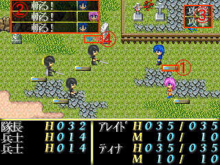
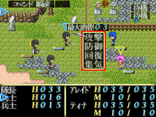
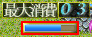
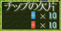

＜＜戦闘システム解説＞＞
|
この戦闘システムの特徴は『行動の先行入力』と『全行動の常時表示』です。
単純でありながら戦略性（駆引き）の高いシステムを目指しました。
ゲームが後半に近付けば近付く程、適当に戦っても勝てない戦闘となっています。
|
■ 先行入力とは？
この戦闘システムでは先に行動を決め、『行動ゲージ』が溜まったら実際の行動が可能になります。
『行動ゲージ』は選んだ行動によって増加値が異なります。
また、常時敵の次の行動も表示されており、それに合わせてこちらも戦略を立てなければなりません。
ただただ適当に戦っても、なかなか勝ちを得る事ができない場面も多々あります。
○実際の戦闘の流れ
【戦闘開始】⇒【行動ゲージが溜まる】⇒【行動を選択する】⇒※①【行動ゲージが溜まり行動実行】⇒【行動を選択する】⇒※①へ
|
■ 戦闘画面の解説 |

① 行動ゲージ
このゲージが溜まると実際の行動が実行されます。
増加値は『敏捷性』と『行動の内容』と敵からの『ペナルティ』の有無で計算されます。
② 敵の次の行動
敵が次に実行する行動が常時表示されています。
敵は（特にボス）多彩な攻撃を仕掛けてきます。
敵の行動を踏まえた上で、最も有効な自分達の行動を考えてください。
③ 自分の次の行動
自分が選んだ行動が表示されています。
④ ターゲット
行動のターゲット表示です（【青】アレイド／【赤】ティナ）
|
■ 行動選択 |

行動実行直後に、次の行動を選択します。
① 攻撃
敵を攻撃します。
攻撃は単純で、『術』による攻撃のみです（アレイドは炎、ティナは雷のイメージです）
毎回ＭＰを消費します。

『パワーゲージ』で、毎回の攻撃の威力を決定します。
最大威力はステータスの『術威力』で定まっており、ゲージをタイミングよく止める事でその回の攻撃力を決めます。
ゲージが低い状態だと威力は弱くなりますが、消費ＭＰもその分減ります。
高い状態だと威力は高くなりますが消費ＭＰも大きくなり、許容範囲を超えるとミスになります。
また、ゲージをＭＡＸにできると、クリティカルヒットとなって大ダメージを敵に与える事ができます。
しかし、ＭＡＸ状態はＭＩＮ（最小）状態と紙一重ですので、タイミングをミスすれば最弱攻撃となるので注意が必要です。
② 防御
敵の攻撃から身を守ります。
ダメージを１／４まで減少させます。防御によって防ぐ事のできる敵の特殊攻撃もあります。
また、防御は行動ゲージとは関係なく、選択したら即実行され、次の行動選択時まで有効となります。
※この防御が、この戦闘システムにおいて最も重要な要素かもしれません
③ 回復
ＨＰを回復します。
ＨＰの回復値とその際の消費ＭＰは『術威力』によって決定されます。
④ 集気
ＭＰを回復します。
回復値はランダムです。
回復に際してのペナルティはありません。
|
■ 戦闘の終了 |

① 勝利
戦闘に勝利すると『チップの欠片』を手に入れることができます。
チップの欠片は１０個で『チップ』１個になります。
また、アレイド達は戦闘終了時毎に全回復します。
② 敗北（ゲームオーバー）
このゲームでは『死亡』はありません。
アレイドもティナも、戦闘不能になっても一定時間で自動的に戦線へ復帰します。
しかし、両方が同時に戦闘不能状態である時に、ゲームオーバーとなります。
|
■ アドバイス（有利に戦う幾つかの方法） |
○ 集中して狙われたら防御
防御すればかなりダメージを軽減できます。
○ 敵を倒す順番を考える
敵の中には、敵同士で協力（支援）を行う敵もいます。
倒す順番を考えなければ、かなりの苦戦になってしまう敵のチームもいます。
○ はじめて見る攻撃は要注意
はじめて見る攻撃で、名前で予測がつかないものは要注意です。
敵の攻撃の中には単なるダメージだけではなく、それ以外の『ペナルティ』を課せられてしまうものもあります。
特殊攻撃でも大概のものは防御で防げたり軽減できたりします。
○ 能力値バランスを変えてみる
このゲームでは能力値をいつでも自由に変更する事ができます。
どうしても勝てない敵に遭遇した場合でも、この能力値のバランスを変更してみることで勝てるようになる事もあります。
○ 重要なのは『防御力』
チップが上手く集まらず、少ないチップを能力に振り分けなければならない場合、『ＨＰ』や『ＭＰ』を高くするよりも『攻撃力』や『防御力』を高めにした方が戦い易くなります。
● ゲームバランス
チップをちゃんと探しながら進めれば、かなり容易にクリアする事が可能です。
逆に、目に止まり易いチップだけを簡単に集めながら急ぎで進めてしまうと、後半でかなりきつくなります。
|